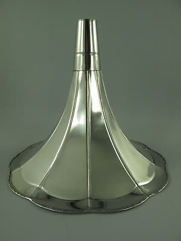
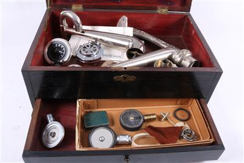
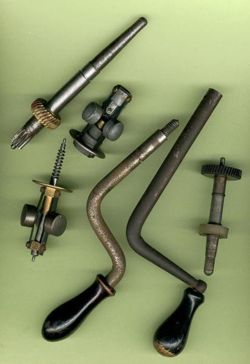
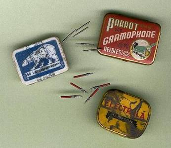
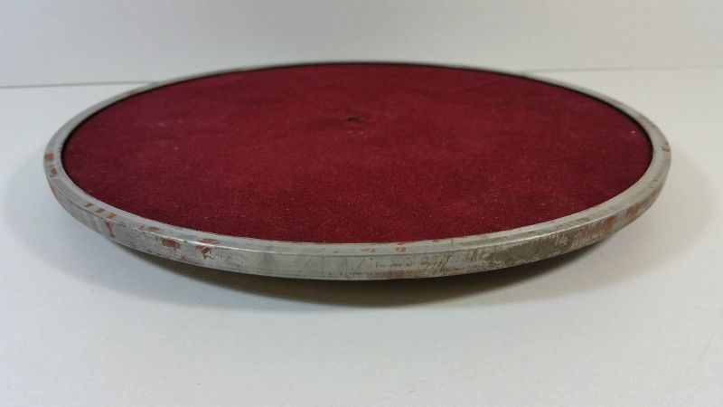
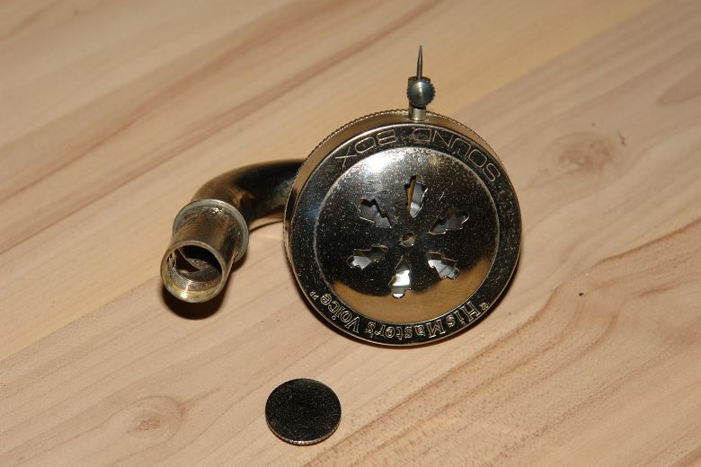

Die Welt der Grammophone beginnt Ende des 19. Jahrhunderts und reicht
bis Anfang der Fünfziger Jahre des 20. Jahrhunderts. Grammophone begeistern
uns heutzutage, weil sie uns in eine andere Zeit versetzen und uns eine
Welt zeigen, die es nicht mehr so gibt, zumindest was das Musikhören
angeht. Damals gehörte das Grammophon ganz selbstverständlich zum Teil
der Hausmöbel einer jeden Wohnung.
Grammophone waren zum Unterschied von Phonographen hauptsächlich zur Wiedergabe der
Schallaufzeichnung vorgesehen. Das ist auch der Grund weshalb die Spindel zur Führung
der in der Membran enthaltenen Schalldose fehlte. Die Konstruktion des Grammophons war
im Vergleich zum Phonographen viel einfacher aber auch deswegen kostengünstiger.
Die wichtigsten Bauteile eines Grammophons sind:
|
      |